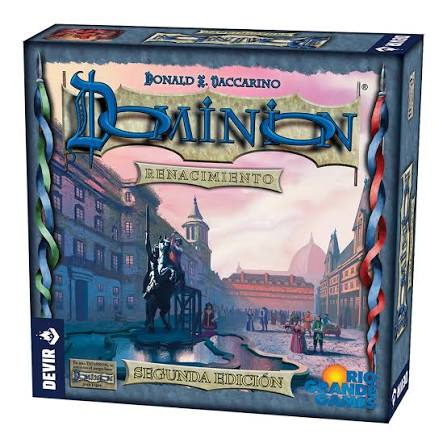
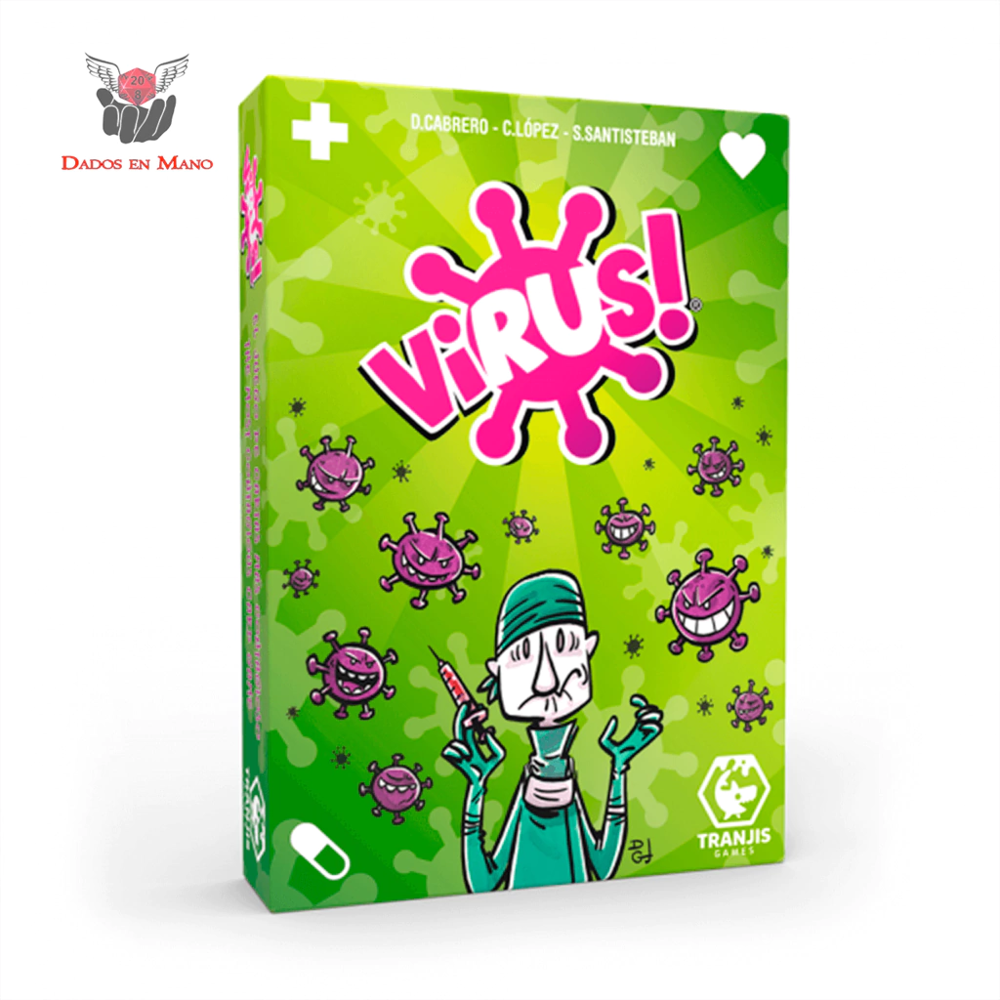
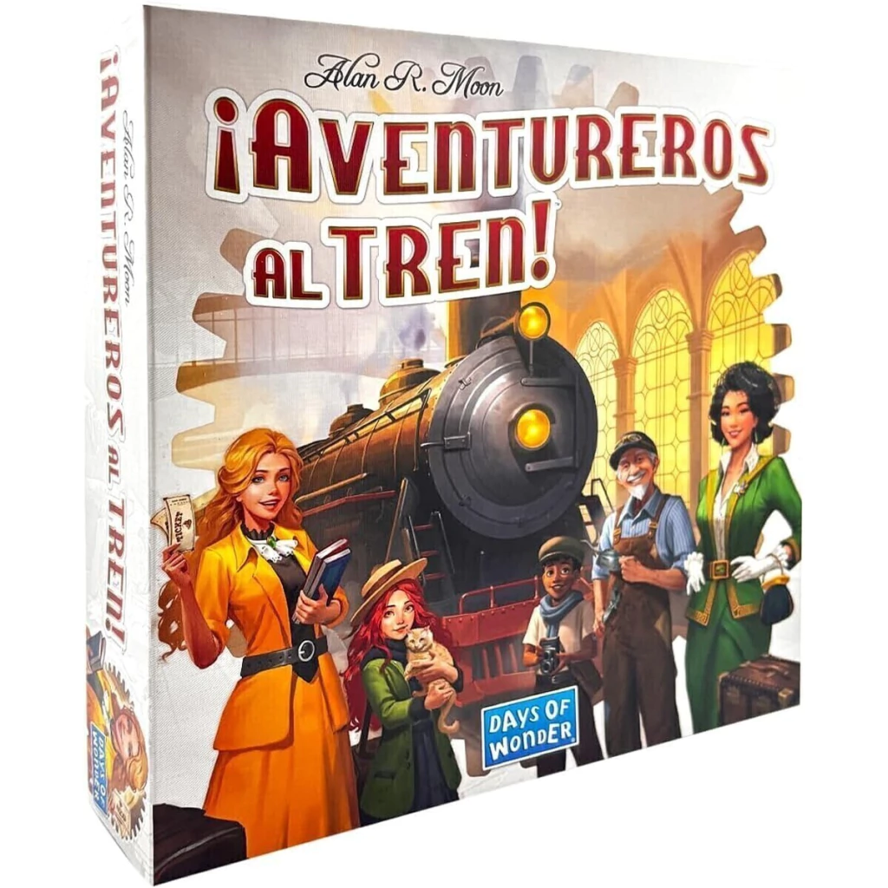
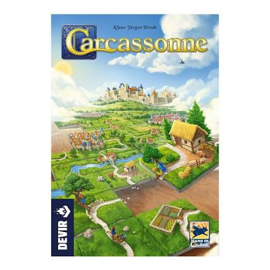

Catan
Reseña: Un clásico moderno de gestión de recursos y negociación. Ideal para adentrarse en los eurogames. La interacción constante entre jugadores lo hace muy dinámico.
📄 Ver Manual
Reseña: Un clásico moderno de gestión de recursos y negociación. Ideal para adentrarse en los eurogames. La interacción constante entre jugadores lo hace muy dinámico.
📄 Ver Manual
Reseña: Un juego profundo de construcción de motores. Los jugadores cooperan para terraformar el planeta, pero compiten por los puntos de victoria. Gran rejugabilidad.
📄 Ver Manual
Reseña: El padre de los juegos de construcción de mazos (deck-building). Comienzas con un mazo pequeño y compras cartas para hacerlo más poderoso y eficiente.
📄 Ver Manual
Reseña: Rápido, caótico y muy divertido. El objetivo es conseguir cuatro órganos sanos antes que los demás, mientras les lanzas virus a tus oponentes.
📄 Ver Manual
Reseña: Perfecto para toda la familia. Fácil de explicar pero con suficiente estrategia para mantener a todos enganchados conectando rutas ferroviarias.
📄 Ver Manual
Reseña: Juego de colocación de losetas donde creas el mapa a medida que juegas. Ideal para partidas relajadas con un gran componente táctico.
📄 Ver Manual¡Hola! Soy un apasionado por los juegos de mesa y el mantenedor de esta ludoteca. Mi objetivo es difundir este maravilloso pasatiempo, creando un catálogo accesible con reseñas honestas para ayudar a otros a encontrar su próximo juego favorito.
¿Tienes dudas sobre un juego o quieres sugerir una nueva reseña? ¡Escríbenos!